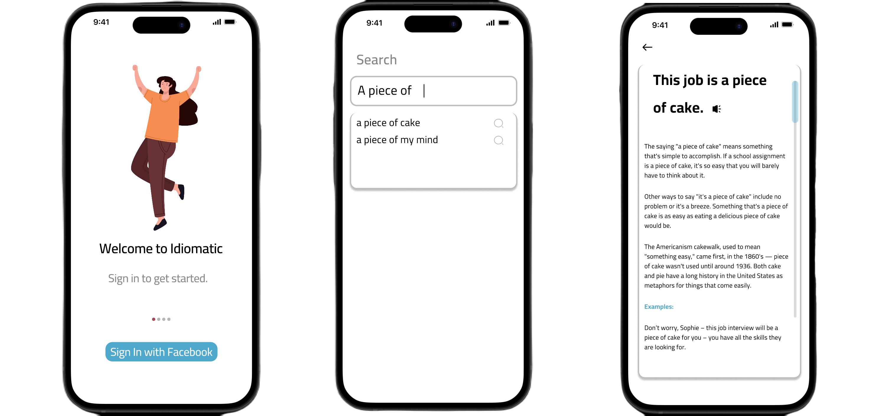

Designing an assistance tool for ESL individuals via Mobile App

Overview:
"Break a leg" may be confusing to an ESL
individual at first. As a team, we decided to
create an application that assists ESL
and international students on our campus
with understanding tough English idioms.
Our solution recevied praise from international
students we conducted product testing with.
"Break a leg" may be confusing to an ESL
individual at first. As a team, we decided to
create an application that assists ESL
and international students on our campus
with understanding tough English idioms.
Our solution recevied praise from international
students we conducted product testing with.
Team:
5 UX Designers
Timeline:
January 11, 2023 - April 28, 2023.
My Role:
UX Designer, UI Designer, UX Researcher
Tools:
Figma, Qualtrics, Loop 11, Contextual Inquiry, Power Points
5 UX Designers
Timeline:
January 11, 2023 - April 28, 2023.
My Role:
UX Designer, UI Designer, UX Researcher
Tools:
Figma, Qualtrics, Loop 11, Contextual Inquiry, Power Points
The Problem:
How do we create an app that helps ESL and
international students learn english idioms.
How do we create an app that helps ESL and
international students learn english idioms.
The Solution:
A solution in Figma of an application which
we tested through moderated user testing and surveys.
A solution in Figma of an application which
we tested through moderated user testing and surveys.
Initial User Research:
The first step in our design process was conducting user research with participants. We executed contextual inquiries to gather data on how ESL individuals looked up phrases that they didn't know. Designers perform research such as this to understand users' needs and prevent mistakes with the final product. Our contextual inquiries consisted of having 25 ESL individuals read a list of english phrases and performing their process as they looked up the meaning of the phrases. We discovered that Google Searches and online dictionaries were frequently used by ESL individuals to understand idioms.
Sampling of phrases used in contextual inquiry:

Teamwork by KJ Method, Affinity Diagram, and Hierarchal Task Analysis:
After performing contextual inquiries with 25 participants, we created an affinity diagram and grouping our findings into areas before a team vote on the top 3 areas to focus on.